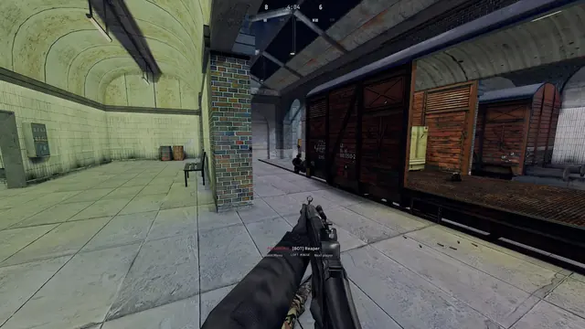
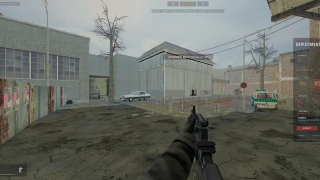
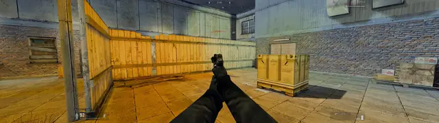
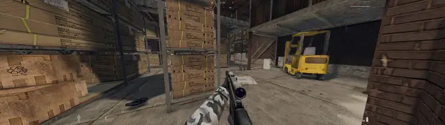
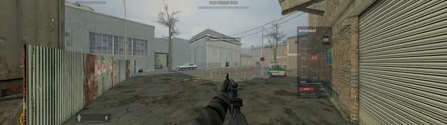
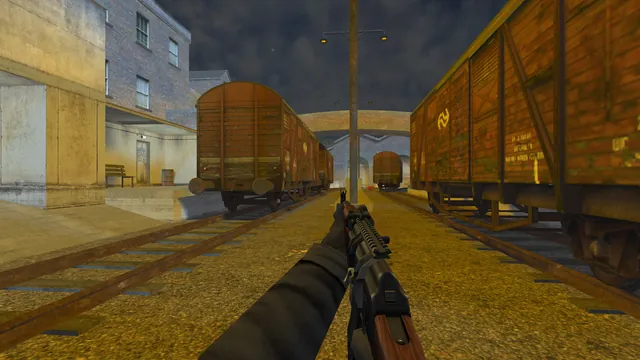

Media
Screenshots
Jedes Bild auf dieser Seite wurde im Spiel mit dem DirectX-12-Renderer aufgenommen. Nichts ist übermalt oder retuschiert.
















Presse und Creator
Pressekit öffnen
Brauchst du die Bilder in voller Auflösung?
Das Pressekit enthält verlustfreie Aufnahmen, das Logo und ein Faktenblatt. Nutze sie frei in Reviews, Videos und Streams.